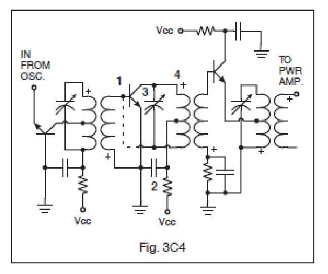
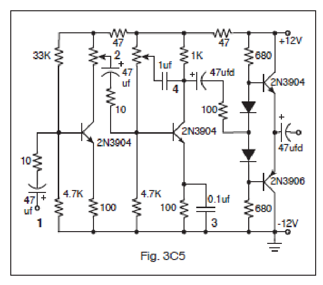

All 60 FCC GROL questions for 3C Components with the correct answers marked, from the official current FCC question pool. Test yourself with the free practice exam.
3-19C1
What happens to the conductivity of photoconductive material when light shines on it?
A. It increases. ✓
B. It decreases.
C. It stays the same.
D. It becomes temperature dependent.
3-19C2
What is the photoconductive effect?
A. The conversion of photon energy to electromotive energy.
B. The increased conductivity of an illuminated semiconductor junction. ✓
C. The conversion of electromotive energy to photon energy.
D. The decreased conductivity of an illuminated semiconductor junction.
3-19C3
What does the photoconductive effect in crystalline solids produce a noticeable change in?
A. The capacitance of the solid.
B. The inductance of the solid.
C. The specific gravity of the solid.
D. The resistance of the solid. ✓
3-19C4
What is the description of an optoisolator?
A. An LED and a photosensitive device. ✓
B. A P-N junction that develops an excess positive charge when exposed to light.
C. An LED and a capacitor.
D. An LED and a lithium battery cell.
3-19C5
What happens to the conductivity of a photosensitive semiconductor junction when it is illuminated?
A. The junction resistance is unchanged.
B. The junction resistance decreases. ✓
C. The junction resistance becomes temperature dependent.
D. The junction resistance increases
3-19C6
What is the description of an optocoupler?
A. A resistor and a capacitor.
B. Two light sources modulated onto a mirrored surface.
C. An LED and a photosensitive device. ✓
D. An amplitude modulated beam encoder.
3-20C1
What factors determine the capacitance of a capacitor?
A. Voltage on the plates and distance between the plates.
B. Voltage on the plates and the dielectric constant of the material between the plates.
C. Amount of charge on the plates and the dielectric constant of the material between the plates.
D. Distance between the plates and the dielectric constant of the material between the plates. ✓
3-20C2
In Figure 3C4, if a small variable capacitor were installed in place of the dashed line, it would?

A. Increase gain.
B. Increase parasitic oscillations.
C. Decrease parasitic oscillations. ✓
D. Decrease crosstalk.
3-20C3
In Figure 3C4, which component (labeled 1 through 4) is used to provide a signal ground?
A. 1
B. 2 ✓
C. 3
D. 4
3-20C4
In Figure 3C5, which capacitor (labeled 1 through 4) is being used as a bypass capacitor?

A. 1
B. 2
C. 3 ✓
D. 4
3-20C5
In Figure 3C5, the 1 μF capacitor is connected to a potentiometer that is used to:
A. Increase gain.
B. Neutralize amplifier.
C. Couple.
D. Adjust tone. ✓
3-20C6
What is the purpose of a coupling capacitor?
A. It blocks direct current and passes alternating current. ✓
B. It blocks alternating current and passes direct current.
C. It increases the resonant frequency of the circuit.
D. It decreases the resonant frequency of the circuit.
3-21C1
A capacitor is sometimes placed in series with the primary of a power transformer to:
A. Improve the power factor. ✓
B. Improve output voltage regulation.
C. Rectify the primary windings.
D. None of these.
3-21C2
A transformer used to step up its input voltage must have:
A. More turns of wire on its primary than on its secondary.
B. More turns of wire on its secondary than on its primary. ✓
C. Equal number of primary and secondary turns of wire.
D. None of the above statements are correct.
3-21C3
A transformer primary of 2250 turns connected to 120 VAC will develop what voltage across a 500-turn secondary?
A. 26.7 volts. ✓
B. 2300 volts.
C. 1500 volts.
D. 5.9 volts.
3-21C4
What is the ratio of the output frequency to the input frequency of a single-phase full-wave rectifier?
A. 1:1.
B. 1:2.
C. 2:1. ✓
D. None of these.
3-21C5
A power transformer has a single primary winding and three secondary windings producing 5.0 volts, 12.6 volts, and 150 volts. Assuming similar wire sizes, which of the three secondary windings will have the highest measured DC resistance?
A. The 12.6 volt winding.
B. The 150 volt winding. ✓
C. The 5.0 volt winding.
D. All will have equal resistance values.
3-21C6
A power transformer has a primary winding of 200 turns of #24 wire and a secondary winding consisting of 500 turns of the same size wire. When 20 volts are applied to the primary winding, the expected secondary voltage will be:
A. 500 volts.
B. 25 volts.
C. 10 volts.
D. 50 volts. ✓
3-22C1
In a linear electronic voltage regulator:
A. The output is a ramp voltage.
B. The pass transistor switches from the “off” state to the “on”" state.
C. The control device is switched on or off, with the duty cycle proportional to the line or load conditions.
D. The conduction of a control element is varied in direct proportion to the line voltage or load current. ✓
3-22C2
A switching electronic voltage regulator:
A. Varies the conduction of a control element in direct proportion to the line voltage or load current.
B. Provides more than one output voltage.
C. Switches the control device on or off, with the duty cycle proportional to the line or load conditions. ✓
D. Gives a ramp voltage at its output.
3-22C3
What device is usually used as a stable reference voltage in a linear voltage regulator?
A. Zener diode. ✓
B. Tunnel diode.
C. SCR.
D. Varactor diode.
3-22C4
In a regulated power supply, what type of component will most likely be used to establish a reference voltage?
A. Tunnel Diode.
B. Battery.
C. Pass Transistor.
D. Zener Diode. ✓
3-22C5
A three-terminal regulator:
A. Supplies three voltages with variable current.
B. Supplies three voltages at a constant current.
C. Contains a voltage reference, error amplifier, sensing resistors and transistors, and a pass element. ✓
D. Contains three error amplifiers and sensing transistors.
3-22C6
What is the range of voltage ratings available in Zener diodes?
A. 1.2 volts to 7 volts.
B. 2.4 volts to 200 volts and above. ✓
C. 3 volts to 2000 volts.
D. 1.2 volts to 5.6 volts.
3-23C1
How might two similar SCRs be connected to safely distribute the power load of a circuit?
A. In series.
B. In parallel, same polarity.
C. In parallel, reverse polarity. ✓
D. In a combination series and parallel configuration.
3-23C2
What are the three terminals of an SCR?
A. Anode, cathode, and gate. ✓
B. Gate, source, and sink.
C. Base, collector, and emitter.
D. Gate, base 1, and base 2.
3-23C3
Which of the following devices acts as two SCRs connected back to back, but facing in opposite directions and sharing a common gate?
A. JFET.
B. Dual-gate MOSFET.
C. DIAC.
D. TRIAC. ✓
3-23C4
What is the transistor called that is fabricated as two complementary SCRs in parallel with a common gate terminal?
A. TRIAC. ✓
B. Bilateral SCR.
C. Unijunction transistor.
D. Field effect transistor.
3-23C5
What are the three terminals of a TRIAC?
A. Emitter, base 1, and base 2.
B. Base, emitter, and collector.
C. Gate, source, and sink.
D. Gate, anode 1, and anode 2. ✓
3-23C6
What circuit might contain a SCR?
A. Filament circuit of a tube radio receiver.
B. A light-dimming circuit. ✓
C. Shunt across a transformer primary.
D. Bypass capacitor circuit to ground.
3-24C1
What is one common use for PIN diodes?
A. Constant current source.
B. RF switch. ✓
C. Constant voltage source.
D. RF rectifier.
3-24C2
What is a common use of a hot-carrier diode?
A. Balanced inputs in SSB generation.
B. Variable capacitance in an automatic frequency control circuit.
C. Constant voltage reference in a power supply.
D. VHF and UHF mixers and detectors. ✓
3-24C3
Structurally, what are the two main categories of semiconductor diodes?
A. Junction and point contact. ✓
B. Electrolytic and junction.
C. Electrolytic and point contact.
D. Vacuum and point contact.
3-24C4
What special type of diode is capable of both amplification and oscillation?
A. Zener diodes.
B. Point contact diodes.
C. Tunnel diodes. ✓
D. Junction diodes.
3-24C5
What type of semiconductor diode varies its internal capacitance as the voltage applied to its terminals varies?
A. Tunnel diode.
B. Varactor diode. ✓
C. Silicon-controlled rectifier.
D. Zener diode.
3-24C6
What is the principal characteristic of a tunnel diode?
A. High forward resistance.
B. Very high PIV(peak inverse voltage).
C. Negative resistance region. ✓
D. High forward current rating.
3-25C1
What is the meaning of the term “alpha” with regard to bipolar transistors? The change of:
A. Collector current with respect to base current.
B. Base current with respect to collector current.
C. Collector current with respect to gate current.
D. Collector current with respect to emitter current. ✓
3-25C2
What are the three terminals of a bipolar transistor?
A. Cathode, plate and grid.
B. Base, collector and emitter. ✓
C. Gate, source and sink.
D. Input, output and ground.
3-25C3
What is the meaning of the term “beta” with regard to bipolar transistors? The change of:
A. Base current with respect to emitter current.
B. Collector current with respect to emitter current.
C. Collector current with respect to base current. ✓
D. Base current with respect to gate current.
3-25C4
What are the elements of a unijunction transistor?
A. Base 1, base 2, and emitter. ✓
B. Gate, cathode, and anode.
C. Gate, base 1, and base 2.
D. Gate, source, and sink.
3-25C5
The beta cutoff frequency of a bipolar transistor is the frequency at which:
A. Base current gain has increased to 0.707 of maximum.
B. Emitter current gain has decreased to 0.707 of maximum. ✓
C. Collector current gain has decreased to 0.707.
D. Gate current gain has decreased to 0.707.
3-25C6
What does it mean for a transistor to be fully saturated?
A. The collector current is at its maximum value. ✓
B. The collector current is at its minimum value.
C. The transistor’s Alpha is at its maximum value.
D. The transistor’s Beta is at its maximum value.
3-26C1
A common base amplifier has:
A. More current gain than common emitter or common collector.
B. More voltage gain than common emitter or common collector. ✓
C. More power gain than common emitter or common collector.
D. Highest input impedance of the three amplifier configurations.
3-26C2
What does it mean for a transistor to be cut off?
A. There is no base current.
B. The transistor is at its Class A operating point.
C. There is no current between emitter and collector. ✓
D. There is maximum current between emitter and collector.
3-26C3
An emitter-follower amplifier has:
A. More voltage gain than common emitter or common base.
B. More power gain than common emitter or common base.
C. Lowest input impedance of the three amplifier configurations.
D. More current gain than common emitter or common base. ✓
3-26C4
What conditions exists when a transistor is operating in saturation?
A. The base-emitter junction and collector-base junction are both forward biased. ✓
B. The base-emitter junction and collector-base junction are both reverse biased.
C. The base-emitter junction is reverse biased and the collector-base junction is forward biased.
D. The base-emitter junction is forward biased and the collector-base junction is reverse biased.
3-26C5
For current to flow in an NPN silicon transistor’s emitter-collector junction, the base must be:
A. At least 0.4 volts positive with respect to the emitter.
B. At a negative voltage with respect to the emitter.
C. At least 0.7 volts positive with respect to the emitter. ✓
D. At least 0.7 volts negative with respect to the emitter.
3-26C6
When an NPN transistor is operating as a Class A amplifier, the base-emitter junction:
A. And collector-base junction are both forward biased.
B. And collector-base junction are both reverse biased.
C. Is reverse biased and the collector-base junction is forward biased.
D. Is forward biased and the collector-base junction is reverse biased. ✓
3-27C1
What type of bias is required for an LED to produce luminescence?
A. Reverse bias.
B. Forward bias. ✓
C. Logic 0 (Lo) bias.
D. Logic 1 (Hi) bias.
3-27C2
What determines the visible color radiated by an LED junction?
A. The color of a lens in an eyepiece.
B. The amount of voltage across the device.
C. The amount of current through the device.
D. The materials used to construct the device. ✓
3-27C3
What is the approximate operating current of a light-emitting diode?
A. 20 mA. ✓
B. 5 mA.
C. 10 mA.
D. 400 mA.
3-27C4
What would be the maximum current to safely illuminate a LED?
A. 1 amp.
B. 1 microamp.
C. 500 milliamps.
D. 20 mA. ✓
3-27C5
An LED facing a photodiode in a light-tight enclosure is commonly known as a/an:
A. Optoisolator. ✓
B. Seven segment LED.
C. Optointerrupter.
D. Infra-red (IR) detector.
3-27C6
What circuit component must be connected in series to protect an LED?
A. Bypass capacitor to ground.
B. Electrolytic capacitor.
C. Series resistor. ✓
D. Shunt coil in series.
3-28C1
What describes a diode junction that is forward biased?
A. It is a high impedance.
B. It conducts very little current.
C. It is a low impedance. ✓
D. It is an open circuit.
3-28C2
Why are special precautions necessary in handling FET and CMOS devices?
A. They have fragile leads that may break off.
B. They are susceptible to damage from static charges. ✓
C. They have micro-welded semiconductor junctions that are susceptible to breakage.
D. They are light sensitive.
3-28C3
What do the initials CMOS stand for?
A. Common mode oscillating system.
B. Complementary mica-oxide silicon.
C. Complementary metal-oxide semiconductor. ✓
D. Complementary metal-oxide substrate.
3-28C4
What is the piezoelectric effect?
A. Mechanical vibration of a crystal by the application of a voltage. ✓
B. Mechanical deformation of a crystal by the application of a magnetic field.
C. The generation of electrical energy by the application of light.
D. Reversed conduction states when a P-N junction is exposed to light.
3-28C5
An electrical relay is a:
A. Current limiting device.
B. Device used for supplying 3 or more voltages to a circuit.
C. Component used mainly with HF audio amplifiers.
D. Remotely controlled switching device. ✓
3-28C6
In which oscillator circuit would you find a quartz crystal?
A. Hartley.
B. Pierce ✓
C. Colpitts.
D. All of the above.